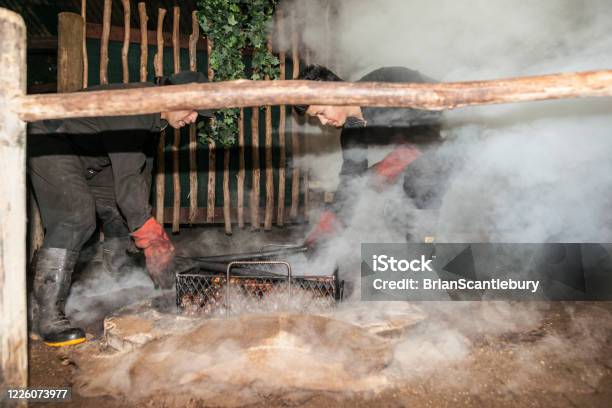

| Name | description |
|---|---|
| Hongi | The hongi is a traditional Māori greeting in New Zealand where two people press their noses and foreheads together at the same time. It symbolizes the sharing of the hā (the breath of life) and unites the visitor (manuhiri) with the local people (tangata whenua). |
| Haka | The haka is a powerful ceremonial dance and posture chant in Māori culture, traditionally performed by groups to display tribal pride, strength, and unity. |
| Hangi | Hāngī is a traditional New Zealand Māori method of cooking food using heated rocks buried in a pit oven, called an umu. |
| Ta moko | Tā moko is the traditional, sacred tattooing and scarification art of the indigenous Māori people of New Zealand. |
| Image | Name | Image | Name |
|---|---|---|---|
| Haka |  |
Hangi | |
| Hongi | |
Tamoko |